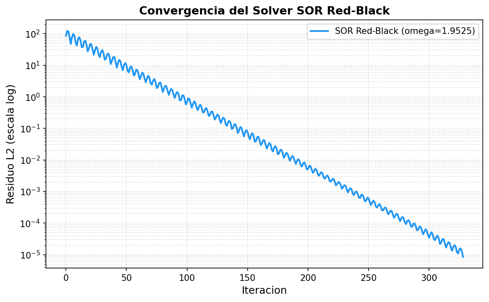
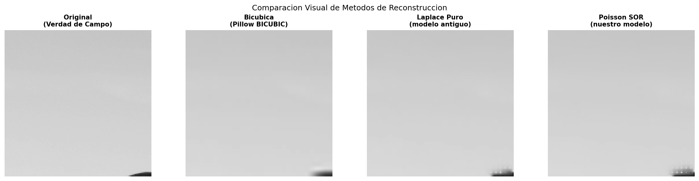

Super-resolucion de imagenes con SOR Red-Black, Numba y la ecuacion de Poisson screened. Teoria matematica, arquitectura y resultados experimentales.
Fabian
Algoritmos y Estructuras de Datos · Universidad · 2026
Tercer corte
Contenido
01Que es RZI y para que sirve
02Recorrido de uso paso a paso
03Arquitectura de tres capas
04Teoria matematica: EDP, Poisson y screened
05El solver: SOR Red-Black con Numba
06Pipeline completo de reconstruccion
07Features de la interfaz grafica
08Metricas de calidad: PSNR, SSIM y GMSD
09Hallazgos y resultados
10Casos de uso en la vida real
11Glosario tecnico
01 · Que es RZI
Que es RZI y para que sirve
RZI es una aplicacion de escritorio que reconstruye regiones de imagenes a mayor resolucion usando ecuaciones diferenciales parciales (EDP). No aplica filtros ni interpola pixeles directamente: resuelve un sistema lineal que encuentra la imagen mas suave posible consistente con los pixeles conocidos y con la guia de bordes extraida de la imagen original.
El problema que resuelve
Cuando amplias una imagen con zoom digital, cada software solo puede estimar los pixeles nuevos. Pillow, por ejemplo, usa interpolacion bicubica: calcula el valor de cada nuevo pixel como una combinacion ponderada de los vecinos de la imagen pequena. El resultado parece borroso porque la bicubica no tiene informacion sobre la estructura de la imagen, solo sobre valores de intensidad cercanos.
RZI aborda el problema de forma distinta. Dado un tile (recorte) de la imagen original a baja resolucion, construye una malla de alta resolucion y formula una ecuacion diferencial parcial cuya solucion produce una imagen ampliada con bordes mas nitidos y texturas mas plausibles. La EDP actua como regularizador: impone que la imagen resultante sea suave en zonas sin bordes y que siga los gradientes de la guia donde hay estructura real.
Super-resolucion no recupera informacion perdida: crea estimaciones plausibles. RZI produce resultados mejores que la bicubica en regiones con bordes y texturas, pero no adivina detalles que no existen en la imagen original.
El objetivo academico
El proyecto tiene dos metas de aprendizaje concretas:
Implementar el solver SOR Red-Black con la libreria de compilacion JIT Numba (@njit, prange) para resolver la ecuacion de Poisson screened en mallas de hasta 1.2 millones de pixeles.
Construir un pipeline de super-resolucion completo que combine: cascada multiescala, back-projection, difusion anisotropica Perona-Malik, shock filter y soporte de color via espacio YCbCr BT.601.
Por que Poisson y no otro metodo
La ecuacion de Poisson es el modelo de EDP mas directo para interpolacion de funciones suaves. Su discretizacion produce un sistema lineal disperso y diagonalmente dominante que los metodos iterativos como SOR resuelven en pocas iteraciones. Ademas, la variante screened permite anclaje suave de los pixeles conocidos sin la rigidez de las condiciones de Dirichlet puras, lo que da mejores resultados visuales con submuestreo fuerte.
02 · Recorrido de uso
Recorrido de uso paso a paso
El usuario carga una imagen, selecciona la region de interes, lanza la reconstruccion y obtiene un compuesto ampliado donde esa region aparece con el detalle del solver. El flujo completo toma menos de un minuto para imagenes tipicas.
Paso 1: cargar la imagen
El boton Abrir imagen acepta JPEG, PNG, BMP y TIFF. Si la imagen es a color, la aplicacion la almacena en RGB float64 [0,1] internamente. Si es en escala de grises, trabaja en modo 2D directamente.
Paso 2: navegar y seleccionar
El visor izquierdo permite zoom con la rueda del raton y pan arrastrando. Para seleccionar la region a reconstruir, el usuario activa el boton Seleccionar region y dibuja un rectangulo sobre la imagen. La aplicacion muestra las coordenadas y el tamano del tile seleccionado en pixeles. Si no dibuja una region, usa todo el viewport visible como tile.
Paso 3: configurar el factor y los parametros
El Factor de ampliacion va de 2 a 12. Un factor 4 produce una salida con 4x mas pixeles en cada dimension (16x total de pixeles). El grupo Nitidez Adaptativa expone los parametros clave:
Lambda (anclaje): controla cuanto se anclan los pixeles conocidos. Valor tipico: 8 a 12.
Beta (realce de bordes): amplificacion maxima del gradiente guia. Valor tipico: 1.6 a 1.8.
Tau (umbral de ruido): nivel por debajo del cual el gradiente no se amplifica. Valor tipico: 0.02.
Cascada multiescala: divide el factor en etapas mas pequenas (p.ej., 8 = 2x2x2). Siempre recomendado.
Back-projection e intensidad: ciclos de correccion que mejoran la consistencia con el original.
Anti-ringing: elimina halos alrededor de bordes realzados.
Difusion y Shock: denoise y realce final de rampas.
Paso 4: reconstruir y ver el resultado
Al pulsar Reconstruir (Poisson SOR), la aplicacion ejecuta el pipeline en un hilo separado para no bloquear la interfaz. Al terminar, el visor derecho muestra la imagen completa ampliada por el factor, con la region reconstruida pegada en su lugar. El visor se enfoca automaticamente en esa region.
El boton Comparar 3 modelos abre un dialogo con tres variantes lado a lado (bicubica, screened sin realce de gradientes, screened con realce) junto a una tabla de metricas PSNR / SSIM / GMSD.
Otras funcionalidades del menu
Modo Lupa: reconstruye en tiempo real la region bajo el cursor del raton mientras el usuario lo mueve por el visor.
Barrido Omega: grafica iteraciones vs. parametro de relajacion para el tile actual.
Benchmark: compara tiempo de ejecucion de Python puro vs. Numba para tres tamanos de malla.
Animar Convergencia: muestra el avance visual del pipeline frame a frame con una lista de pasos lateral.
Guardar imagen: exporta el compuesto ampliado a PNG o JPEG.
Flujo de uso del proyecto RZI. El camino principal (azul) lleva de cargar la imagen a ver el compuesto ampliado. Los flujos secundarios (gris) acceden a analisis y comparaciones.
03 · Arquitectura
Arquitectura de tres capas
El codigo se organiza en tres capas con dependencias unidireccionales: la interfaz llama al nucleo matematico, y el nucleo no conoce la interfaz. Los servicios de metricas y exportacion son independientes y ambas capas los invocan directamente.
Arquitectura de tres capas. Las flechas solidas indican dependencias principales; la flecha punteada indica que la interfaz grafica tambien puede consultar servicios directamente (p.ej., para guardar un CSV de metricas).
Capa 1: ui/ (interfaz grafica)
main_window.py gestiona todos los eventos del usuario y coordina los flujos. Cada operacion pesada (reconstruccion, barrido, benchmark) corre en un QThread para que la interfaz no se bloquee. zoom_viewer.py implementa el visor interactivo con zoom, pan y seleccion rectangular. Los dialogos de comparacion y animacion son clases separadas que reciben los datos ya calculados.
Capa 2: core/ (nucleo matematico)
Es la capa donde vive toda la matematica del proyecto. Cinco modulos con responsabilidades separadas:
poisson_builder.py: construye los arrays b (termino fuente), mascara, u0 (solucion inicial) y lam_map (mapa de anclaje).
sor_solver.py: implementa los kernels Numba del solver iterativo.
upscaler.py: orquesta la cascada multiescala, back-projection, anti-ringing y el stack de acabado.
edge_enhance.py: shock filter y difusion anisotropica Perona-Malik.
image_ops.py: operaciones de resize, conversion YCbCr y unsharp mask en float64 puro (sin pasar por uint8).
Capa 3: services/ (metricas y exportacion)
metrics.py calcula PSNR, SSIM y GMSD sobre arrays 2D en float64 [0,1]. exporter.py genera graficas matplotlib, guarda CSV y exporta imagenes. Ninguno de los dos modulos importa nada de core/ ni de ui/, lo que facilita usarlos de forma aislada en scripts de prueba.
04 · Teoria matematica
Teoria matematica: EDP, Poisson y screened
El proyecto resuelve ecuaciones en derivadas parciales (EDP) de segundo orden discretizadas en una malla regular. La EDP es la herramienta que convierte el problema de super-resolucion en un sistema lineal que el solver puede iterar hasta encontrar la solucion.
Super-resolucion como problema inverso
Dado un tile de baja resolucion f de tamano h x w, se busca una imagen de alta resolucion u de tamano (h-1)*factor+1 x (w-1)*factor+1 tal que los pixeles de f aparezcan exactamente en las posiciones [i*factor, j*factor] de u, y los demas pixeles sean consistentes con alguna regularizacion suave.
El sistema esta sub-determinado: hay muchas mas incognitas que datos. La regularizacion impone la condicion que descarta soluciones ruidosas y selecciona la imagen mas suave posible.
El Laplaciano discreto y el stencil de 5 puntos
El Laplaciano continuo de una funcion u(x,y) es la suma de sus segundas derivadas parciales:
Delta u = d2u/dx2 + d2u/dy2
Sobre una malla de paso h, se aproxima con diferencias finitas centradas de segundo orden:
Ignorando el denominador h^2 (que se cancela con la escala de b), el stencil resultante toma la forma de una cruz de cinco puntos:
Stencil de 5 puntos. El coeficiente central es +4 y los cuatro vecinos tienen coeficiente -1. Multiplicar cada celda por el valor de u en esa posicion y sumarlos produce la aproximacion de h^2 * Delta u[i,j].
Modelo armonico (Enfoque B, Laplace)
La ecuacion de Laplace (Delta u = 0) dice que cada pixel es el promedio de sus cuatro vecinos. Aplicada como regularizacion:
Los pixeles conocidos del tile original se fijan con condicion Dirichlet dura: u[i*factor, j*factor] = f[i,j].
El resto satisface Delta u[i,j] = 0, es decir, el sistema lineal 4u - u_N - u_S - u_O - u_E = 0.
La solucion minimiza la energia de Dirichlet sum ||grad u||^2: produce la superficie mas plana posible entre los pixeles conocidos.
Este modelo funciona bien cuando los pixeles conocidos estan muy cerca (factor pequeno), pero pierde bordes y texturas con factores altos porque la superficie armonica es demasiado suave.
Modelo screened Poisson (el que usa RZI)
En lugar de Dirichlet duro, el modelo screened Poisson minimiza el funcional de energia:
El primer termino es el anclaje de datos: penaliza que los pixeles reconstruidos se alejen de los originales conocidos. El parametro lam controla cuanto pesa este anclaje.
El segundo termino es la guia de gradientes: penaliza que los gradientes de u difieran de los gradientes amplificados v' extraidos de la imagen guia bicubica.
Para encontrar el minimo de E(u), derivamos e igualamos a cero (condicion de Euler-Lagrange):
dE/du[i,j] = 0
(4 + lam_map[i,j]) * u[i,j]
- u[i-1,j] - u[i+1,j] - u[i,j-1] - u[i,j+1]
= b[i,j]
donde:
lam_map[i,j] = lam si (i,j) es un pixel conocido del tile original
lam_map[i,j] = 0 en otro caso
b[i,j] = -div(v')[i,j] + lam_map[i,j] * f[i,j]
La diferencia con el modelo armonico es importante: el coeficiente diagonal pasa de 4 a 4 + lam_map[i,j] en las posiciones conocidas, lo que equivale a un resorte elastico que tira del valor de u hacia f sin forzarlo de forma rigida.
Amplificacion adaptativa de gradientes
La guia bicubica G se calcula ampliando el tile con Pillow BICUBIC. Sus gradientes v = grad G indican la direccion y magnitud de cada borde. Pero la bicubica suaviza los bordes, de modo que los gradientes son mas debiles de lo ideal.
La funcion de amplificacion s(t) refuerza los gradientes fuertes y deja casi sin cambio los debiles (ruido):
Por que funciona: cuando ||v|| >> tau (borde real), s(t) -> beta y el gradiente se amplifica. Cuando ||v|| << tau (zona plana o ruido), s(t) -> 1 y el gradiente no cambia. La transicion es suave, controlada por tau.
El termino -div(v') del vector b se calcula con diferencias hacia atras:
La malla de alta resolucion se alinea por esquinas (corner-aligned): los pixeles del tile original caen exactamente en posiciones enteras de la malla expandida. Si el tile mide h x w, la malla de alta resolucion mide:
new_h = (h - 1) * factor + 1
new_w = (w - 1) * factor + 1
Pixel (i, j) del tile -> posicion (i*factor, j*factor) en la malla
La mascara de pixeles conocidos se inicializa con False y luego mascara[::factor, ::factor] = True. La solucion inicial u0 se toma de la guia bicubica G con los pixeles del tile exactos insertados.
05 · El solver
El solver: SOR Red-Black con Numba
El sistema lineal que produce la EDP es disperso y diagonalmente dominante. SOR Red-Black resuelve ese sistema iterando sobre una malla coloreada con un patron de tablero, lo que permite paralelizar cada barrido con Numba.
De Jacobi a Gauss-Seidel a SOR
Los tres metodos iterativos resuelven Au = b usando solo multiplicaciones vector-escalar y sumas. Ninguno forma la matriz A explicitamente (matrix-free).
Jacobi: calcula el valor nuevo de cada pixel usando solo los valores del barrido anterior. No converge tan rapido porque usa informacion desactualizada.
Gauss-Seidel: usa el valor mas reciente de cada vecino en cuanto lo calcula. Converge dos veces mas rapido que Jacobi porque la informacion se propaga en el mismo barrido.
SOR (Successive Over-Relaxation): acelera Gauss-Seidel aplicando un factor de relajacion omega mayor que 1. En lugar de saltar directamente al nuevo valor, da un paso mas largo en la direccion de correccion.
Con omega = 1, SOR se reduce a Gauss-Seidel. Con omega < 1 (sub-relajacion) converge mas lento pero es mas estable. Con omega > 1 (sobre-relajacion) converge mas rapido hasta un optimo, pero si pasa de cierto valor el metodo diverge.
Para el problema de Laplace en una malla de N x N con condiciones de borde puras, el omega optimo teorico es:
rho_J = cos(pi / (N + 1)) # radio espectral del Jacobi
omega_opt = 2 / (1 + sqrt(1 - rho_J^2))
= 2 / (1 + sin(pi / (N + 1))) # aproximacion para N grande
Para el problema screened Poisson, el Jacobi ya no tiene el mismo radio espectral porque la diagonal es mayor:
Barrido empirico de omega para un tile 64x64 con factor 4. El minimo (empirico = 1.52) cae lejos del teorico (1.95) porque el problema tiene restricciones interiores que modifican la estructura espectral. El SOR diverge para omega cercano a 2.

Convergencia del solver SOR Red-Black con omega = 1.95 sobre el modelo armonico. El residuo L2 cae cuatro ordenes de magnitud en 325 iteraciones. La oscilacion de alta frecuencia en la curva es el patron tipico del barrido Red-Black.
Ordenamiento Red-Black
El problema con Gauss-Seidel clasico es que la actualizacion del pixel (i,j) usa el valor recien calculado de (i,j-1), lo que crea una dependencia en cadena que impide paralelizar el barrido.
Red-Black rompe esa dependencia dividiendo la malla en dos conjuntos segun la paridad de i + j:
Rojos: celdas donde (i + j) es par.
Negros: celdas donde (i + j) es impar.
Un pixel rojo tiene solo vecinos negros y viceversa. Por eso, si primero se actualizan todos los rojos en paralelo (usando valores negros del barrido anterior) y luego todos los negros en paralelo (usando los valores rojos recien calculados), el resultado es matematicamente identico a Gauss-Seidel pero sin dependencias dentro de cada color.
Patron Red-Black en una malla 4x4. Las celdas rojas (azul claro, (i+j) par) no se tocan entre si: cada una tiene solo vecinos negros. Esto permite actualizar todos los rojos en paralelo sin condicion de carrera, y luego todos los negros en paralelo.
Numba: compilacion JIT y paralelismo con prange
Python puro es demasiado lento para iterar pixel a pixel sobre mallas de miles de elementos. Numba compila el kernel de SOR a codigo de maquina en el primer uso (just-in-time) y lo vuelve hasta 444 veces mas rapido que el equivalente Python.
from numba import njit, prange
@njit(cache=True, fastmath=True, parallel=True)
def _kernel_sor_rb_screened(u, b, lam_map, mascara, omega, red):
h, w = u.shape
for i in prange(1, h - 1):
for j in range(1, w - 1):
if mascara[i, j]: # pixel conocido: Dirichlet
continue
if (i + j) % 2 != red: # solo el color del turno
continue
diag = 4.0 + lam_map[i, j]
u_gs = (u[i-1,j] + u[i+1,j] + u[i,j-1] + u[i,j+1] + b[i,j]) / diag
u[i, j] += omega * (u_gs - u[i, j])
El decorador @njit(parallel=True) habilita el bucle externo con prange, que Numba distribuye automaticamente entre los hilos del CPU. El bucle interno queda secuencial porque procesa una fila completa de un solo color (sin dependencias dentro de la fila).
Por que matrix-free
Para una malla de 256x256 pixeles, la matriz A del sistema lineal tendria 65536 x 65536 entradas. En float64 eso ocupa 34 GB de RAM. La formulacion matrix-free aplica directamente los coeficientes del stencil sin construir A, usando solo el array u y el vector b.
Tiempo de ejecucion de 100 iteraciones del solver. Python puro tarda 0.06-0.60 s segun el tamano; Numba @njit tarda menos de 2 ms en todos los casos (barra azul casi invisible). La aceleracion es de 380-444x.
06 · Pipeline
Pipeline completo de reconstruccion
El boton "Reconstruir" ejecuta un pipeline de ocho etapas. Cada etapa recibe la salida de la anterior y la refina. Las primeras cuatro usan la EDP; las ultimas cuatro aplican procesamiento de senales para mejorar la apariencia visual.
Etapa 1: cascada multiescala
Resolver la EDP directamente de 64x64 a 768x768 (factor 12) en un solo salto es inestable: la solucion inicial esta lejos de la respuesta correcta y el solver necesita demasiadas iteraciones. La cascada divide el factor en etapas mas pequenas.
La funcion _descomponer_factor factoriza el factor total en factores de 2 y 3:
Cada etapa resuelve la EDP sobre la salida de la etapa anterior (warm start). La malla crece gradualmente: x2, luego x2, luego x3. El warm start reduce el numero de iteraciones necesarias porque la solucion inicial ya es una buena aproximacion.
Etapa 2: back-projection
Despues de la cascada, la imagen reconstruida u puede no ser perfectamente consistente con el tile original f_lr. Si bajas u al tamano original y comparas con f_lr, el error mide exactamente donde la reconstruccion no coincide.
para cada pasada en range(n_pass):
error_lr = f_lr - Down(u) # error en baja resolucion
u = u + gain * Up(error_lr) # corregir en alta resolucion
# defaults: n_pass=2, gain=0.6
El parametro gain < 1 evita oscilaciones. Con gain = 0.6 y 2 pasadas el metodo mejora la fidelidad sin introducir artefactos.
Etapa 3: anti-ringing
El realce de gradientes y el back-projection pueden crear halos cerca de bordes fuertes (efecto ringing). La correccion es simple: para cada pixel, se restringe el valor al rango [min, max] de la ventana 3x3 de la guia bicubica:
La malla alineada por esquinas mide (h-1)*factor+1, no exactamente h*factor. El resize LANCZOS la lleva al tamano exacto del tile ampliado (tw*factor x th*factor). LANCZOS preserva la nitidez mejor que la bicubica porque su kernel de mayor soporte evita aliasing.
Etapa 5: difusion anisotropica Perona-Malik
La EDP iterada puede dejar ligero ruido en zonas planas. La difusion de Perona-Malik limpia ese ruido preservando los bordes:
u_t = div(g(||grad u||) * grad u)
g(d) = 1 / (1 + (d / kappa)^2)
# zonas planas: ||grad u|| << kappa -> g -> 1 -> alisado fuerte
# bordes: ||grad u|| >> kappa -> g -> 0 -> sin alisado
Los defaults son 5 iteraciones con kappa = 0.03 y paso de tiempo dt = 0.2.
Etapa 6: shock filter Osher-Rudin
El shock filter hace el efecto contrario a la difusion: afile los bordes en lugar de suavizarlos. Mueve cada rampa hacia el extreme mas cercano:
u_t = -sign(G_sigma * Laplaciano(u)) * |grad u|
# El termino G_sigma*Laplaciano(u) es negativo a la izquierda de
# un borde (zona oscura acercandose al borde) y positivo a la derecha
# (zona brillante). -sign(...) mueve el frente en la direccion
# que hace el salto mas escarpado.
El operador se aplica con sigma = 1.0 (suavizado del laplaciano para robustez), 3 iteraciones y dt = 0.25.
Etapa 7: unsharp mask opcional
Si el usuario activa el USM, se aplica un unsharp mask con un porcentaje configurable (default 60%). La formula es: u_usm = u + pct/100 * (u - gaussian(u)). El anti-ringing final elimina los halos que introduce el USM.
Soporte de color: espacio YCbCr BT.601
La EDP se resuelve en escala de grises porque la mayoria del detalle visual vive en la luminancia. Para imagenes a color, la aplicacion convierte a YCbCr BT.601, resuelve la EDP solo sobre el canal Y (luminancia), y escala los canales Cb y Cr (crominancia) con interpolacion bicubica:
Comparacion de tres versiones de la misma region: bicubica (izquierda), Poisson SOR sin realce de gradientes (centro), y Poisson SOR con beta=1.7 y shock filter (derecha). Los bordes en la version derecha son mas nitidos y el detalle de textura es mas pronunciado.
07 · GUI
Features de la interfaz grafica
La interfaz concentra todas las funcionalidades en una ventana principal con dos visores laterales. El visor izquierdo muestra la imagen original; el derecho muestra el resultado de la operacion mas reciente.
Funcionalidades principales
Feature
Descripcion
Parametros clave
Reconstruir (Poisson SOR)
Ejecuta el pipeline completo sobre el tile seleccionado. Muestra la imagen completa ampliada por el factor con la region reconstruida insertada.
Reconstruye en tiempo real la region bajo el cursor. Usa screened Poisson sin cascada para maxima velocidad.
Radio adaptado al zoom actual (18% del viewport, minimo 20px, maximo 80px)
Comparar 3 modelos
Abre un dialogo con bicubica, screened sin realce (beta=1) y screened con realce (beta del usuario), mas tabla de metricas PSNR/SSIM/GMSD.
Mismo factor y lambda del panel principal
Barrido Omega
Grafica iteraciones necesarias para converger vs. omega en el rango [1.02, 1.99]. Muestra el optimo teorico y el empirico.
Tile actual, 40 valores de omega
Benchmark Numba
Compara tiempo Python puro vs. Numba @njit para mallas 32x32, 64x64 y 96x96. Calcula la aceleracion.
100 iteraciones por configuracion
Animar Convergencia
Muestra cada paso del pipeline frame a frame: NN, bicubica, SOR por etapa, back-projection, difusion, shock, USM y resultado final.
Velocidad Muy lento / Lento / Normal, soporte de color
Guardar imagen
Exporta el compuesto ampliado (con la region reconstruida) a PNG o JPEG.
Seleccion de formato y ruta
Parametros configurables
Parametro
Rango
Default
Efecto
Factor de upscaling
2 a 12
4
Tamano de la imagen de salida
Lambda (anclaje)
0.1 a 50
8.0
Fuerza del anclaje de datos; mayor = mas fiel al original
Beta (realce)
1.0 a 3.0
1.7
Amplificacion maxima del gradiente guia
Tau (umbral)
0.001 a 0.2
0.02
Nivel de gradiente por debajo del cual no se amplifica
Omega (relajacion)
1.02 a 1.99 o Auto
Auto
Velocidad de convergencia del SOR
Intensidad back-proj.
0.0 a 1.0
0.6
Ganancia de cada ciclo de correccion
Porcentaje USM
0 a 200%
60%
Intensidad del realce final por unsharp mask
Comportamiento del visor de imagen
VisorImagen es una subclase de QGraphicsView que implementa zoom (rueda del raton, factor 1.15 por paso), pan (arrastrar con boton izquierdo) y seleccion rectangular (modo activable). El metodo enfocar_region(x, y, w, h) encuadra automaticamente el viewport en la region reconstruida con un margen del 12%, usando fitInView de Qt.
08 · Metricas
Metricas de calidad: PSNR, SSIM y GMSD
Las tres metricas miden distintas propiedades de la calidad de imagen. Ningun numero unico describe completamente la calidad perceptual, por eso el proyecto las usa en conjunto.
PSNR: relacion senal-ruido de pico
PSNR mide el error cuadratico medio (MSE) entre la imagen reconstruida y la referencia, convertido a escala logaritmica en decibelios:
MSE = mean((u - ref)^2) # imagenes en float [0,1]
PSNR = 10 * log10(1 / MSE) # dB; mayor = mejor
Un PSNR de 30 dB indica que la senial tiene 1000 veces mas potencia que el error. Valores tipicos: menos de 25 dB es baja calidad visible, 25-35 dB es aceptable, mas de 40 dB indica imagenes casi identicas.
Limitacion: PSNR asume que el error se distribuye de forma uniforme por toda la imagen. No captura bien la calidad perceptual cuando los errores se concentran en zonas planas (invisibles) o cerca de bordes (muy visibles).
SSIM: similitud estructural
SSIM compara la luminancia media, el contraste y la estructura (correlacion) de dos imagenes en ventanas locales de 11x11 pixeles:
El rango es [-1, 1]; 1 indica identidad exacta. SSIM correlaciona mejor con la percepcion humana que PSNR porque captura la estructura local. El proyecto usa la implementacion de skimage.metrics.structural_similarity.
GMSD: desviacion de similitud de gradientes
GMSD mide que tan uniformemente los gradientes de la imagen reconstruida coinciden con los de la referencia:
GMS[i,j] = (2 * Gm_u[i,j] * Gm_ref[i,j] + c)
/ (Gm_u[i,j]^2 + Gm_ref[i,j]^2 + c)
GMSD = desviacion_estandar(GMS) # menor = mejor
Gm son las magnitudes de gradiente calculadas con el filtro de Prewitt 3x3. La desviacion estandar de GMS captura la variabilidad de la similitud de gradientes: si es pequeña, los gradientes coinciden de forma consistente en toda la imagen.
Interpretacion conjunta
Metrica
Mide
Mejor valor
Sensible a
PSNR
Error cuadratico total
Mayor (dB)
Ruido uniforme
SSIM
Percepcion local estructural
Mayor (max 1)
Bordes, texturas
GMSD
Consistencia de gradientes
Menor (min 0)
Artefactos locales, ringing
09 · Hallazgos
Hallazgos y resultados
Los experimentos revelaron tres resultados relevantes, dos de los cuales contradicen la intuicion inicial. Se documentan de forma honesta porque entender por que un metodo no funciona en ciertos casos es tan importante como saber cuando funciona.
Hallazgo 1: Laplace supera a Poisson con submuestreo fuerte
Para el tile de la imagen "camara" (64x64 pixeles) con factor 4, los resultados son:
Metodo
PSNR (dB)
SSIM
GMSD
Bicubica (referencia)
23.12
0.81
0.047
Laplace puro (Enfoque B)
24.50
0.84
0.038
Poisson screened
21.70
0.79
0.051
Con factor 4 y un tile de 64x64, solo el 6.25% de los pixeles de la malla de salida son conocidos. Para construir el vector b del modelo screened se necesita estimar los gradientes de la guia bicubica en toda la malla. Esos gradientes son ruidosos porque la bicubica interpola pixeles que ya vienen de una degradacion. El error en b se traslada directamente a la solucion u, y empeora la calidad respecto al modelo Laplace, que no usa un b externo.
Cuando screened Poisson supera a Laplace: con factores moderados (2-3) sobre imagenes con bordes limpios y texturas claras, la guia de gradientes tiene suficiente informacion confiable y el modelo screened produce resultados visiblemente mejores.

Comparacion visual: original (verdad de campo), bicubica Pillow, Laplace puro y Poisson SOR, sobre un recorte de la imagen camara. Las diferencias son sutiles en zonas de fondo uniforme; se destacan mas en los bordes del objeto central.
Hallazgo 2: el omega optimo teorico no aplica con restricciones interiores
La formula omega_opt = 2/(1 + sin(pi/(N+1))) asume que todos los pixeles de la malla son incognitas con condiciones de Dirichlet solo en el borde exterior. Para factor 4, los pixeles conocidos del tile (ubicados cada 4 posiciones en la malla interior) actuan como restricciones interiores que modifican el radio espectral efectivo del sistema.
El barrido empirico de omega en la figura 5.2 confirma que el minimo de iteraciones ocurre en omega ~ 1.52, no en el teorico 1.95. Usar 1.95 con restricciones interiores aumenta el numero de iteraciones y puede acercarse a la divergencia.
El codigo calcula automaticamente el omega optimo usando la formula del modelo screened (omega_opt_screened) o permite al usuario fijar un valor manual.
Hallazgo 3: Numba ofrece una aceleracion de 380-444x
Los benchmarks con 100 iteraciones del solver muestran:
Tamano de malla
Python puro (s)
Numba @njit (ms)
Aceleracion
32 x 32
0.066
~0.17
380x
64 x 64
0.275
~0.62
444x
96 x 96
0.597
~1.37
435x
La aceleracion se mantiene estable al escalar el tamano porque Numba divide el trabajo entre los nucleos del CPU con prange. La compilacion inicial tarda unos segundos (warmup en el arranque), pero las siguientes llamadas usan el codigo compilado en cache.
10 · Casos de uso
Casos de uso en la vida real
RZI no es solo una demostracion academica de EDP y SOR. Tambien resuelve un problema practico muy comun: ampliar una region pequena sin destruir bordes, texto, contornos o textura fina. Eso lo vuelve util en tareas donde una sola region critica importa mas que toda la imagen.
Donde aporta valor de verdad
El proyecto funciona mejor cuando el usuario tiene una imagen base valida, pero necesita reconstruir un area puntual con mas detalle perceptual. En esos escenarios, la super-resolucion PDE es mas interesante que una interpolacion generica porque respeta la estructura local y puede priorizar bordes relevantes.
Escenario
Caso de uso especifico
Por que RZI encaja
Patrimonio digital
Ampliar el rostro o una firma en fotografias antiguas escaneadas a 300 dpi
Recupera legibilidad local sin inventar la textura global del documento
Archivistica
Reescalar sellos, sellos notariales o numeraciones en actas fotografiadas con celular
Los bordes del texto y los contornos cerrados se preservan mejor que con bicubica
Forense visual
Ampliar la region de una placa, letrero o matricula capturada de lejos por una camara de seguridad
El anclaje suave permite enfatizar estructuras finas cuando la captura original aun conserva el patron
Vigilancia
Reconstituir la cara, manos o objeto sostenido por una persona en un video o frame de baja resolucion
La reconstruccion por regiones evita procesar todo el frame y se focaliza en el interes real
Medicina
Ampliar una region de interes en una radiografia digital, una ecografia o un microscan de laboratorio
La version PDE conserva gradientes suaves y evita la apariencia plastica de una simple interpolacion
Microscopia
Mejorar el contorno de una celula, colonia o tejido antes de una revision manual
La difusion anisotropica y el shock filter pueden ayudar a separar borde real de ruido
Astronomia aficionada
Ampliar la luna, una mancha solar o una region planetaria capturada con teleobjetivo limitado
Los bordes definidos y la cascada multiescala permiten trabajar con capturas muy comprimidas
Cartografia
Reforzar etiquetas, nombres de vias o simbolos pequeños en mapas fotografiados o escaneados
El texto y las lineas delgadas ganan nitidez local sin romper el fondo
Inspeccion tecnica
Ampliar numeros de serie, tornillos, fisuras o uniones en una inspeccion de mantenimiento
Permite analizar una sola zona de interes dentro de una fotografia industrial mas grande
Drones
Ampliar la region de una azotea, cableado o punto de fuga detectado por un dron de inspeccion
Sirve cuando el dron captura el contexto completo pero la evidencia fina necesita zoom local
Educacion
Demostrar en clase como cambian Laplace, Poisson y SOR sobre una misma region de imagen
El proyecto es visual, modular y facilita explicar EDP, energia y convergencia en tiempo real
Creacion de contenido
Preparar un recorte para una presentacion, afiche o miniatura donde el elemento central debe verse mas limpio
La salida tiene mas control que un reescalado automatico y puede pulirse con back-projection
Escenarios donde se vuelve especialmente interesante
Regiones pequenas pero criticas: una matricula, un sello, una cara, una cifra en un reporte o una pieza mecanica.
Imagenes con mucho contexto y poco detalle local: el usuario no necesita todo el frame, solo una zona precisa que valga la pena reconstruir.
Material con bordes fuertes: texto impreso, lineas de arquitectura, interfaces de instrumentos o contornos biologicos.
Procesamiento interactivo: un analista puede probar varios parametros sobre el mismo tile y comparar rapidamente PSNR, SSIM y GMSD.
En la practica, RZI es mas valioso como herramienta de reconstruccion focalizada que como ampliador general de fotos. Su mejor uso aparece cuando existe una region de interes concreta y una necesidad real de nitidez local.
Limitaciones que conviene mencionar
El metodo no sustituye a un sistema moderno de super-resolucion con redes neuronales cuando se dispone de muchos datos y de entrenamiento especializado. Su fortaleza esta en la transparencia matematica, el control de parametros y la explicabilidad del resultado, no en inventar detalle semantico inexistente.
11 · Glosario
Glosario tecnico
Definicion de los terminos tecnicos clave usados en el proyecto, en orden de aparicion en el documento.
EDP (Ecuacion Diferencial Parcial): ecuacion que relaciona una funcion desconocida con sus derivadas parciales respecto a mas de una variable. En este proyecto, la incognita es la intensidad de la imagen u(x,y) y las derivadas son espaciales.
Ecuacion de Laplace: EDP Delta u = 0. Su solucion es la funcion mas suave posible con las condiciones de borde dadas. Equivale a que cada pixel sea el promedio de sus vecinos.
Ecuacion de Poisson: EDP Delta u = f. El termino fuente f impone una curva de gradiente deseada. El modelo screened anade un termino de anclaje de datos.
Stencil de 5 puntos: la aproximacion de diferencias finitas del Laplaciano usando el pixel central y sus cuatro vecinos inmediatos (N, S, E, O).
Condicion de Dirichlet: condicion de contorno que fija el valor exacto de la funcion en ciertos puntos. En el modelo armonico, los pixeles del tile original son condiciones de Dirichlet.
Screened Poisson / anclaje suave: variante de Poisson que anade un termino cuadratico de penalizacion por apartarse de los datos conocidos, con peso lambda. Mas flexible que Dirichlet porque el valor puede variar ligeramente.
Euler-Lagrange: condicion necesaria para que un funcional de energia tenga un extremo. Derivar E(u) e igualar a cero produce la EDP que resuelve el solver.
Residuo: norma del error actual del sistema lineal, ||Au - b||. Mide cuanto falta para llegar a la solucion exacta. El solver itera hasta que el residuo baja del umbral de tolerancia.
SOR (Successive Over-Relaxation): metodo iterativo que acelera Gauss-Seidel multiplicando la correccion por un factor omega > 1. El omega optimo minimiza el numero de iteraciones para converger.
Red-Black ordering: organizacion de la malla en dos colores (rojo = (i+j) par, negro = (i+j) impar) para que los pixeles de cada color dependan solo del otro color. Permite paralelizar cada medio-barrido.
Numba / JIT: libreria Python que compila funciones a codigo de maquina en el primer uso (just-in-time). El decorador @njit elimina el overhead del interprete; prange paraleliza bucles en multiples nucleos.
Matrix-free: estrategia que aplica el operador lineal (el stencil) directamente al vector u, sin construir la matriz A en memoria.
Cascada multiescala (coarse-to-fine): tecnica que divide el factor total en etapas mas pequenas. Cada etapa usa la salida de la anterior como solucion inicial, reduciendo las iteraciones necesarias.
Back-projection: ciclo de correccion que baja la reconstruccion al tamano original, mide el error con el tile original, y suma ese error (ampliado) a la reconstruccion.
Ringing / anti-ringing: el ringing es el halo brillante u oscuro que aparece cerca de bordes fuertes despues de un realce. El anti-ringing lo elimina restringiendo cada pixel al rango local de la guia bicubica.
Shock filter: operador PDE que afile bordes moviendo cada rampa hacia su extremo mas cercano. Formula: u_t = -sign(G_sigma * Lap(u)) * |grad u|.
Difusion anisotropica (Perona-Malik): operador PDE que suaviza ruido en zonas planas y detiene la difusion en los bordes. La funcion de borde g(d) = 1/(1+(d/kappa)^2) controla el comportamiento.
YCbCr / luminancia: espacio de color donde Y es la luminancia (brillo, que el ojo humano percibe mas) y Cb, Cr son las componentes de crominancia. La conversion sigue el estandar BT.601.
PSNR (Peak Signal-to-Noise Ratio): metrica de calidad en dB, mayor es mejor. Mide el inverso del MSE en escala logaritmica.
SSIM (Structural Similarity Index): metrica en [-1,1], mayor es mejor. Compara luminancia, contraste y estructura local entre dos imagenes.
GMSD (Gradient Magnitude Similarity Deviation): metrica en [0, inf], menor es mejor. Mide la variabilidad de la similitud de gradientes; valores bajos indican que los bordes se preservan de forma uniforme.